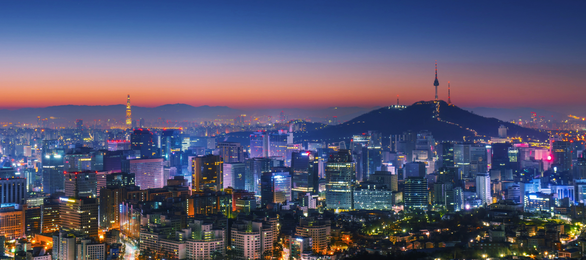
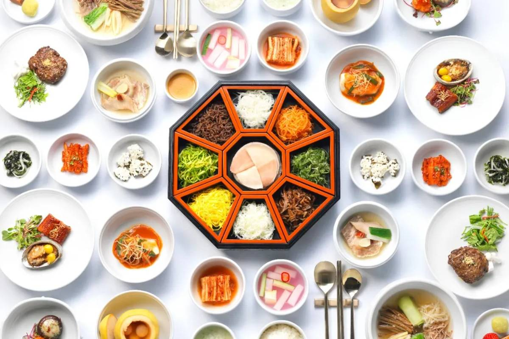

Places to visit in Korea
TOUR
CULTURE
Are you looking for a place to travel? Well Korea it is!The most important things to consider when traveling are probably -tourist areas, food, shopping and activities. Our website contains information of the most authentic places and tradition foods that you can consider on your trip. This place will give you the accurate information to plan for your trip and will find a new world to enjoy. There is no need to get knowledge by browsing several blogs posted by other people. Come and get the most efficiant travel plans!
Korea is a place full of street foods and other kinds of cuisins. Food is a very important part of life for people, and food plays a very important role in how we communicate and connect with people. You can experience things you have never experienced here with various ingredients such as herbs, seafood, roots, and meat.